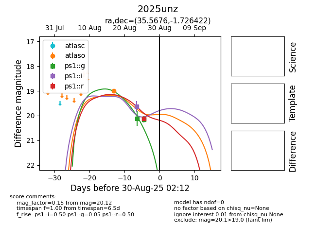

YSE: 2025unz
2025unz (yse)
equatorial (ra, dec) = (35.5676,-1.72642)
galactic (l, b) = (167.3607,-56.54968)

last atlaso=18.99, ps1::g=20.16, ps1::i=19.60, ps1::r=20.12
1 atlaso, 2 ps1::g, 1 ps1::i, 1 ps1::r detections